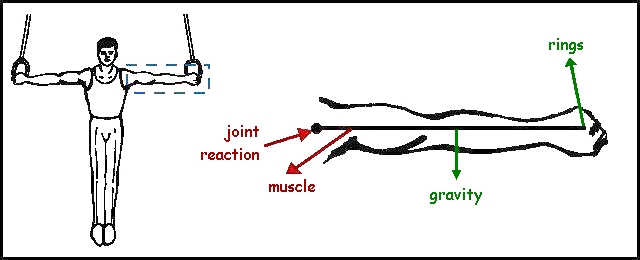
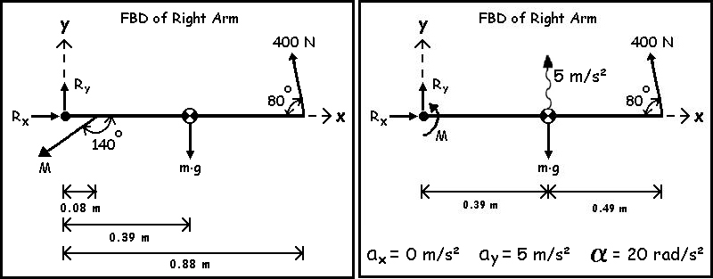
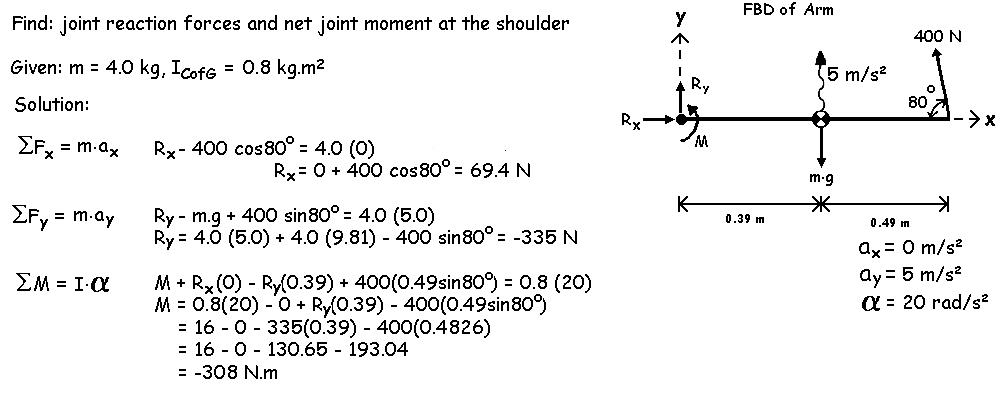

Dynamic Equilibrium
On the preceeding page we introduced dynamic equilibrium with some simple examples in which only one force was causing the acceleration and only one moment was causing the angular acceleration. In reality, every segment within the human body and most other objects are influenced by several forces that cause the observed accelerations.
Dynamic Equilibrium with many forces:
We can calculate the internal kinetics (joint reaction forces and the net joint moment) in dynamic equilibrium just like we did in static equilibrium with only a few differences. The first step is to draw the free body diagram. The figure below shows the FBD that we used in the gymnast example in the static equilibrium lecture on the left. On the right is the FBD that would be required if the gymnast was not in static equilibrium.
 The FBD has all the same features as in static equilibrium with the addition of the linear and angular accelerations. Also, we have used the letter M to represent the net moment of force caused by the tissues that cross the joint. The dynamic equilibrium FBD (right) above uses a wavy line to represent acceleration. The wavy line is used so that we do not confuse accelerations with the force vectors.
We could make a force table as the second step but this is not really necessary. The force table was used in static equilibrium to help see the rectangular components and moments. However, we can now go directly to the equations and use the FBD to find the components. This time, the sums of the forces are not equal to zero but they are equal to the mass times the acceleration. We will also solve for the net moment by summing the moments about the segment center of gravity instead of the proximal joint. This is an important distinction that will be described later. Finally, we need to the inertial properties of the segment including the moment of inertia about the CofG as well as the mass.

.